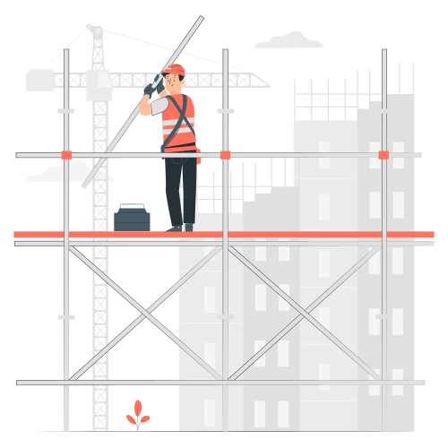

<ion-content class="ion-padding">
  <div class="container" style="width: 100%; height: 100%; display: flex; align-items: center; justify-content: center; flex-direction: column">
    <div style="display: flex; align-items: center; justify-content: center; flex-direction: column">
      
      <h1>Cette page est en cours de construction</h1>
    </div>
  </div>
</ion-content>
